Comprehensive High-Level Design of the EUDI Wallet Reference Implementation (HLD)
Purpose of this document
The purpose of this document is to provide a comprehensive high-level design that captures both functional and cross-functional requirements for the EUDI Wallet Reference implementation. It emphasizes detailing the target architecture, including back-end assets and components. The document is structured to support incremental and periodic updates, ensuring it remains aligned with the product roadmap and evolves alongside project advancements and changing requirements.
Reference Documents
| [ID] | [Document] | [Version] |
|---|---|---|
| R01 | EUDI Architecture and Reference Framework | v2.6.0 |
| VC11 | Verifiable Credentials Data Model | v1.1 |
Terminology
This section provides a comprehensive list of the technical terms, abbreviations, or acronyms used throughout this document, along with their definitions or explanations.
Abbreviations and acronyms
This section provides a comprehensive list of the technical terms, abbreviations, or acronyms used throughout this document.
| Acronym | Definition |
|---|---|
| ADR | Architecture Decision Record |
| ARF | Architecture and Reference Framework document (R01) |
| CA | Certification Authority |
| CBOR | Concise Binary Object Representation |
| EAA | Electronic Attestation of Attributes |
| eIDAS | electronic Identification and Trust Services |
| EUDI | European Union Digital Identity |
| EUDIW | EUDI Wallet |
| JWT | Json Web Token |
| HTTP | Hypertext Tranfer Protocol |
| LoA | Level of Assurance |
| MS | Member State |
| NFC | Near Field Communication |
| PID | Person Identification Data |
| RP | Relying Party |
| rQES | Remote Qualified Electronic Signature |
| QEAA | Qualified Electronic Attestation of Attributes |
| QR | Quick Response |
| QSCD | Qualified Signature/seal Creation Device |
| QTSP | Qualified Trust Service Provider |
| W3C | World Wide Web Consortium |
Definitions
The following definitions are listed to provide clarity on important terms used throughout the document. It shall be noted that the listed definitions are in alignment with the terminology used in R01 EUDI Architecture and Reference Framework.
| Term | Description |
|---|---|
| PID | A set of data, issued in accordance with Union or national law, enabling the identity of a natural or legal person, or of a natural person representing a natural or legal person, to be established. - eIDAS 2.0. |
| PID Provider | A Member State or legal entity providing Person Identification Data to Users. R01 |
| Issuer | A Person Identification Data Provider issuing PID or a (Qualified) Trust Service Provider issuing (Q)EAA. In the case of the EUDI Wallet there may be multiple Issuers for PID and (Q)EAA. R01 |
| Attestation | A set of one or more claims made by an issuer. VC11 |
| Verifiable Credential | A verifiable credential is a tamper-evident credential that has authorship that can be cryptographically verified. Verifiable attestations can be used to build verifiable presentations, which can also be cryptographically verified. VC11 |
| Presentation | Data derived from one or more verifiable attestations, issued by one or more issuers, that is shared with a specific verifier. VC11 |
| Verifiable Presentation | Tamper-evident presentation encoded in such a way that authorship of the data can be trusted after a process of cryptographic verification. Certain types of verifiable presentations might contain data that is synthesized from, but do not contain, the original verifiable attestations (for example, zero-knowledge proofs). VC11 |
Introduction
This document provides a detailed description of the software system's overall architecture and design, focusing on its major components, their relationships, and their interactions. Its purpose is to provide a clear and comprehensive understanding of the system's structure, design choices, and constraints, serving as a blueprint for developers during the implementation phase.
The document serves as a crucial reference for the development team, ensuring that everyone has a clear understanding of the system's architecture and design choices. It also facilitates communication between stakeholders, helping to align expectations and clarify any ambiguities or misunderstandings. The document reflects the related architecture decisions recorded in the ADR (Architecture Decisions Records) under this repository (/decisions). Both, this document and ADR, are under the same GitHub repo https://github.com/eu-digital-identity-wallet/reference-implementation-architecture.
The design outlined in this document must adhere to the minimum requirements established by the European Digital Identity Wallet Architecture and Reference Framework (ARF). The ARF document clearly defines the background, the objectives, the scope and the constraints for this work.
The target audience of this document are the developers of the EUDI Wallet reference implementation. This document, along with the reference implementation, will be part of the deliverables to be shared with the Member States (MS) for supporting the development of their own solutions.
The following outlines the conceptual high-level design of the EUDI Wallet ecosystem, encompassing its core components and illustrating the interfaces between an EUDI Wallet instance and other entities within the EUDI Wallet ecosystem.
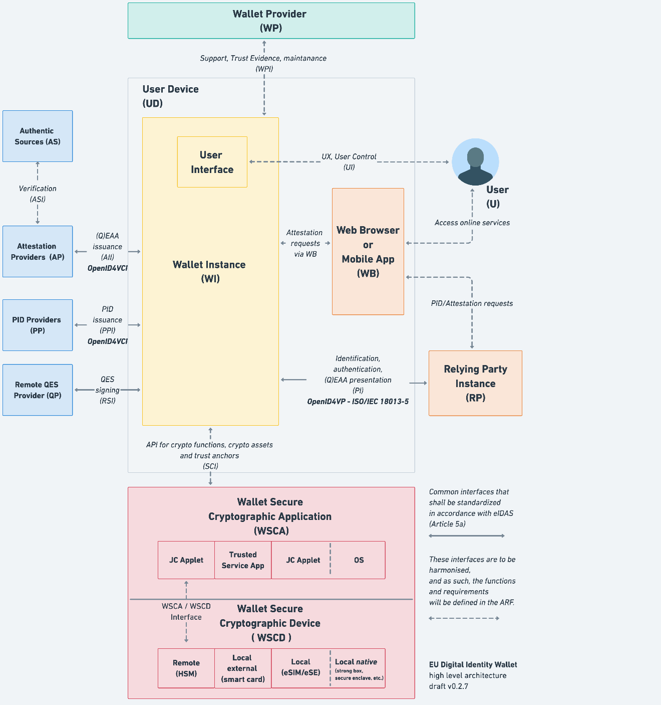
Figure 1: Logical high-level design of the EUDI Wallet ecosystem R01
In this figure, the following components are described:
- User: A natural or legal person using an EUDI Wallet.
- PID Provider (PP): A Member State or another legal entity delegated by the Member State performing identity proofing of the User at LoA High and providing the Person Identification Data to the Users.
- Authentic Source (AS): A repository or system, that contains attributes about a natural or legal person and is the primary source of those attributes or recognized as an authentic source of attributes in national law.
- Attestation Provider - QEAA / EAA (AP): Any provider able to issue a qualified or non-qualified electronic attestation of attributes.
- QES Provider (QP): Providers of remote signature creation services enabling the User to create qualified electronic signatures.
- Relying party (RP): A legal or natural person that relies upon EUDI Wallets for the provisioning of public or private services to Wallet users.
- Wallet Provider (WP): A public or private organization providing an EUDI Wallet Solution that can be instantiated on a user's device, e.g., through installation and initialization.
- Web Browser Component (WB): A component that facilitates wallet selection and credentials selection in the user's device e.g. request forwarding module or equivalent OS engine. (Request Forwarding Profile for the Browser-API i.e. W3C WICG Digital Credentials API (referred to as Browser-API))
- Trust anchor provider (TAP): It is the provider responsible for providing the root of trust in the WSCD.
- Mobile Device (MD): The smart mobile device used to which the Wallet Instance is provisioned.
- Wallet Instance (WI): A specific installation of an EUDI Wallet Solution belonging to, and which is controlled by, a User.
- Wallet Secure Cryptographic Application (WSCA): An application provisioned in the WSCD responsible to implement all security-critical functions like creating, storing, and managing cryptographic keys and data. It interfaces with the Wallet Instance.
- Wallet Secure Cryptographic Device (WSCD): A hardware-backed secure environment for creating, storing, and/or managing cryptographic keys and data. Examples include Secure Elements (SE), Trusted Execution Environments (TEEs), and (remote or local) Hardware Security Module (HSM)
The following interfaces describe how the different components and actors will communicate:
- WI-U: Interface between the User and the Wallet Instance.
- RP-WI: Interface used to exchange PID and/or electronic attestations of attributes from the Wallet instance to the Relying Party.
- PP-WI: Interface used to issue PID.
- AP-WI: Interface used to issue EAA and QEAA.
- AS-WI: Interface used to issue AEAA.
- AS-AP: Interface used to exchange or verify authentic data between authentic sources and the attestation providers.
- QP-WI: Interface used to provide remote signature services.
- WI-WSCA: Programmable interface used to manage cryptographic assets and functions.
- WSCA-WSCD: Interface to communicate with the WCSD hardware or operating system.
- WI-WP: Interface needed to provide support to the user of the wallet and collect metrics for accounting purposes.
System Architecture
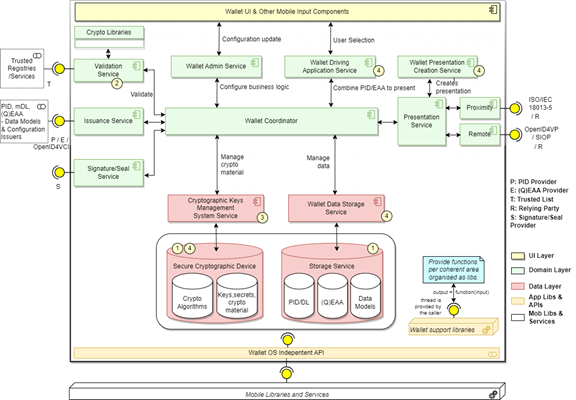
Figure 2: EUDIW High Level Design
The Architecture and Reference Framework (ARF) sets the context for the target EUDI Wallet Solution by defining:
- the foreseen use cases to be served (ARF#2),
- the types of flows to be supported (ARF#annex.4),
- the roles of the ecosystem (ARF#3),
- the lifecycle of the Wallet (ARF#4.4),
- the requirements for Issuing PID and (Q)EAA (ARF#6.6.2),
- the required building blocks (ARF#4.2),
- the logical solution ecosystem (ARF#3), and
In this section, a high-level overview of the system's architecture is presented, focusing specifically on the Wallet Instance Component presented in Section 6 (High-Level Design of the EUDI Wallet Ecosystem). The goal is to depict the primary components, their responsibilities, and their interactions. This is depicted using component diagrams accompanied by a brief textual explanation of their role.
The minimum EUDIW requirements to be satisfied by the Architecture capabilities are those defined by the EIDAS v2.0, the corresponding Implementing Acts and ARF.
Based on the ADR, the EUDIW prototype is a mobile native application (and hence not a web application running within a browser). Of course, EUDIW will reuse all the relevant native libraries and the secure elements on the respective mobile platform.
Figure 2 above presents the high-level representation of the EUDIW's architecture. Subsequent sections focus on each major Wallet component, sub-component, or module, describing its purpose and its interactions.
In Figure 2 some of the wallet components and interfaces are qualified by a number indicating:
- Internal/Local or external/remote.
- For verifying the attestations, the validation service needs to receive updated validity status on the (Q)EAA and PID held by the Wallet, since they can be actively revoked by its Provider (ARF, PID and (Q)EAA Lifecycle).
- As per ARF (section 4: HLA).
In Figure 2 some of the wallet interfaces are marked by a letter indicating:
- P: PID Provider
- E: (Q)EAA Provider
- T: Trusted List
- R: Relying Party
- S: Signature/Seal Provider (i.e., remote (Q)ES signatures/seal provider).
The architecture includes the standard architecture layers: UI, Domain, Data. The Domain includes the services and the coordinator and supports the UI. Only the coordinator has access to the data layer.
The majority of Wallet components are envisioned as stateless services. Notably, exceptions include the storage services responsible for holding crypto material, attestations data, configuration, and audit data.
The wallet coordinator plays a crucial role in overseeing the orchestration of foundational components dedicated to issuing, presenting, and validating. This wallet coordination streamlines user interface accessibility to these essential functionalities. It is noteworthy that even the wallet coordinator, which is capable of executing business processes, is designed to be stateless and depends on the data layer for performing its tasks.
The cryptographic capabilities of the Wallet will follow the design approach specified by the W3C Web Cryptography API implemented by the web browsers. This refers to guidance, the design approach, the layering, and the algorithms selection, not on the programming languages used by the web browsers. Any additional required cryptographic capabilities will be implemented following the design principles of W3C Web Cryptography while considering the existing cryptographic capabilities on the respective mobile platform. The minimum requirements to be satisfied by these cryptographic capabilities are those defined by the ARF.
A Trust Framework will be established to ensure that sensitive information is protected and the validation service for the ecosystem of Issuers, EUDIW holders, EUDIW Providers, and RPs is properly governed.
All transactions that the User has with external parties e.g. PID Issuer, (Q)EAA Issuer, Wallet Issuer, Relying Parties, etc. will be recorded in a transaction log that serves to ensure non-repudiation, criminal investigations and most importantly for the user to review/track all their interactions and identify manipulation/misuse. Any privacy aspects related to the transaction log will be analyzed and, if needed, the document will be updated accordingly.
It is important to be stated that beyond the presented components, the Wallet will depend, where necessary, on the capabilities of the current typical mobile device for processing, networking as well as sensors, security/crypto and other device secure elements as these are provided by the hardware, operating system, and libraries. Subsequent versions of this document will provide more details on the device elements to be used. Device native capabilities will be consumed via a well-defined API that will isolate the EUDIW implementation from any specifics of each device.
The key specifications that will support the design and implementation of the Wallet include several OpenID specs (namely, OpenID for Verifiable Presentations, OpenID for Verifiable Credential Issuance and Self-Issued OpenID Provider v2), including the specs of attestation formats SD-JWT-VC, CBOR/COSE, and holder identification and binding, the relevant ISO specifications (ISO/IEC 18013-5, ISO/IEC 18013-7 and ISO/IEC 23220-1), and the relevant W3C specifications (Verifiable Credentials Data Model, JSON-LD family of specifications).
Components Design
This section provides a more detailed description of each major component, sub-component, or module of the architecture, including its purpose, functionality, and design decisions. This section details any external dependencies, interfaces, or APIs required for the component to function correctly.
As mentioned above, all components except the storage services and the wallet coordinator will be stateless. Additionally, any interaction with device native services will be via a clearly defined API.
The primary programming languages used for the development of architecture components are Native Kotlin for Android and native Swift for iOS. (as specified in the ADR decisions, namely ADR-0004 and ADR-0005).
Wallet UI
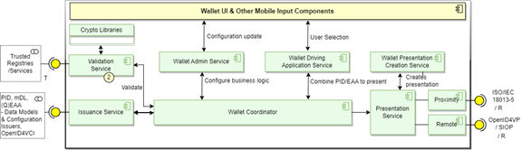
Figure 3: Wallet UI
As all applications running on the device, the Wallet will depend on the device networking, keyboard, microphone, secure elements, and other supporting services. Like other mobile applications, the Wallet UI is an area that the users perceive as belonging to the wallet and will display buttons, notifications, images, and any other UI element the users expect to find in an app's UI. The Wallet UI will not be the only means for receiving user input. The coordinator will have an API that will be triggered as needed for enabling the user to provide input via the device keyboard or for biometric authentication.
The Wallet UI provides the means for enabling user interactions with other wallet services as well as the interfaces for presenting third parties requests, creating verifiable presentations from one or more attestations, and collecting User authorization to disclose data.
It is important that the UI keeps the holder well informed and gets the user authorization before exchanging or presenting any data. For example, the UI must clearly indicate the Relying Party asking for data, and if it has been authenticated by the Wallet to be what it claims to be.
The actions requested by the user are orchestrated by the Wallet Coordinator component. Via the Wallet UI, the user can configure/update the business logic and request additional attestations via the Wallet Admin Service and the Wallet Coordinator. The Wallet UI will also prompt the holder for identification when needed.
The UI enables the user to request the list of all stored attestations on the user's device and their status. For each attestation the following information will be presented: the issuer, date of issuance, expiration date, attributes and attestation status (note that the Wallet only accepts attestations after their validation, issuer authentication and user authorization).
Wallet Coordinator
Introduction to Wallet Coordinator
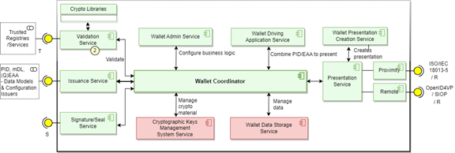
Figure 4: Wallet Coordinator
The typical application architecture consists of 3 layers. The UI Layer the Domain Layer and the Data Layer. The UI Layer is responsible to display the application data and serves as the primary point of user interaction. The Data Layer is responsible to persist and serve application's data. The Domain Layer implements the business logic of the application, and the business data exchanges with the Data Layer.
The Domain Layer of the EUDI Wallet is responsible to implement various use cases and protocols. The implementation of each protocol is assigned to a particular service as shown by the EUDIW High Level Design diagram (Presentation Service, Validation Service, Issuance Service, etc.).
The shared business logic, the interactions between components and the business data exchanges with the Data Layer have been assigned to the Wallet Coordinator instead of splitting this functionality and assigning it to each component. Essentially, the Wallet Coordinator is the shared part of the Domain Layer (for logic re-use or for design improvement and testability) and it is the only component interacting with the Data Layer. Use cases orchestration and auditing for example, are assigned to the Wallet Coordinator.
The Wallet Coordinator, due to its role as mediator, will also be responsible for recording all User's transactions with external parties e.g., PID Issuer, (Q)EAA Issuer, Wallet Issuer, Relying Parties, etc. in a transaction log.
Wallet Admin Service
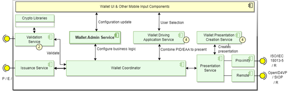
Figure 5: Wallet Admin Service
The Wallet Admin Service provides an interface allowing the user to configure the appropriate Wallet business logic. The preferences/configuration is persistent and managed by the Storage Service (see configuration examples below).
The Issuing Service, the Coordinator and the Admin Service will collaborate for managing attestations. The configuration, the data models of the attestations and the user attestations will be stored by the Coordinator in the Wallet Data Storage area.
The Wallet Admin Service, supported by the relevant Coordinator API and the UI, will be responsible for:
- Validating and storing user attestations and the relevant data models and metadata.
- Enabling the user to manage the attestations and to report on the available attestations and their status.
- Querying the authoritative relying party registration list to ensure that the registration has not been revoked/suspended/changed.
- Collecting user preferences like for example the frequency of contacting authoritative relying parties and setting the status of attestations.
- Retrieving, managing and presenting the transaction log.
Wallet Driving Application Service
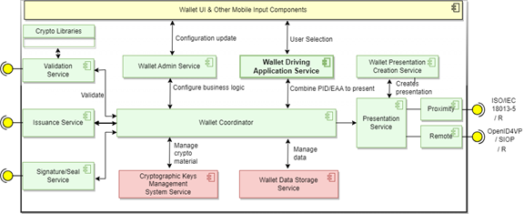
Figure 6: Wallet Driving Application Service
The Wallet Driving Application (WDA) Service will support the user interacting with the Wallet UI in creating a presentation based on PID/(Q)EAA by selecting attestations and for each attestation the attributes to be included in the presentation. The selections will be stored temporarily in the Wallet Data Storage area by the Wallet Coordinator (to be used by the Wallet Presentation Creation Service).
The Wallet Driving Application will associate each selected attribute with metadata (e.g., the attestation issuance scheme, the attestation type, and the index of each selected attribute). The metadata could be used for organizing the presentation and in the case the selected attestations support selective disclosure to provide an issuer-based proof instead of one based on self-signing.
Wallet Presentation Creation Service
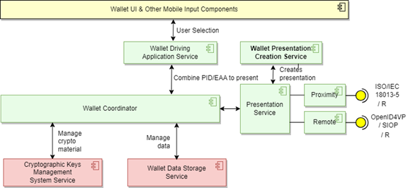
Figure 7: Wallet Presentation Creation Service
The Wallet Presentation Creation Service will be invoked by the user via the UI and will retrieve the temporary stored (by the WDA via the Wallet Coordinator) presentation from the Wallet Data Storage area and create the final presentation to be transmitted to the requesting RP.
The Wallet Presentation Creation Service organizes the selected attributes per attestation and per attribute index. In the case the selected attributes belong to attestations that were issued using a scheme that supports selective disclosure (e.g., ISO/IEC 18013-5, SD-JWT-VC) the Wallet Presentation Creation Service will generate an issuer-based proof for the selected attributes. Else, the Wallet Presentation Creation Service will self-sign the selected attributes.
For presentations the relying party will be able to receive for each attribute the following information: the issuer, date of issuance, the expiration date and the attribute status.
In the case the End-user uses a Self-Issued OP (i.e. SIOPv2), can authenticate themselves and create the final presentation to be transmitted to the requesting RP.
Issuance Service

Figure 8: Wallet Issuance Service
The Issuance Service requests, receives, verifies, and stores the selected issued attestations. The process is orchestrated by the coordinator after retrieving/receiving the attestations and includes a call to the Validation Service for validating the attestation signatures. Reception of attestations can be asynchronous and hence persistent state will need to be maintained.
The supported attestations formats are:
- ISO/IEC 18013-5 for PID and potentially other identity related documents (e.g. mDL).
- SD-JWT-VC for PID (included in the roadmap)
- W3C Verifiable Credentials for other (Q)EAA
- JSON-LD for other (Q)EAA
as per the ARF.
The supported attestations protocols are:
- OpenID4VCI for PID, QEAA and EAA.
At a high-level the issuance process includes the following steps:
- Request and get issuer's metadata;
- Validate issuer;
- Authenticate and authorize with issuer;
- Request credential and submit the required claims (with biometric or claim-based holder bindings);
- Receive, verify, and store the attestations (directly or via a QR Code).
For the mDL the schema and data model of ISO/IEC 18013-5 will be followed (as per ADR-0002).
Signature/Seal Service
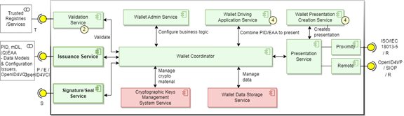
Figure 9: Wallet Signature/Seal Service
EUDI Wallet must enable the User, under certain conditions, to create qualified electronic signatures or seals.
This can be achieved by having the EUDIW certified as a qualified signature/seal creation device (QSCD) or, by implementing secure authentication and signature/seal invocation capabilities to a local or remote QSCD. This responsibility is assigned to the Signature/Seal Service.
EUDI Wallet interfaces with QSCD devices will be expanded in future versions of this document to include on device, internal, external and remote/cloud based key management and storage support.
Validation Service
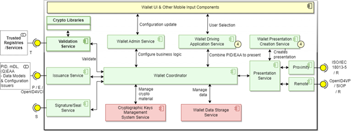
Figure 10: Wallet Validation Service
The Validation Service is triggered by the coordinator to validate the received attestations (PID, QEAA, EAA) submitted by the Issuance Service. For verifying the PID and (Q)EAAs, the service accesses the relevant public certificates in the trusted source/list via the Wallet-Trusted-List interface and verifies their signatures. (for both remote and proximity verifications).
The Validation service, as part of the EUDIW Trust Model, will also be used to validate the Relying Party, the PID Provider, the (Q)EAA Issuer, the Signature/Seal service provider, and may be used to validate the holder's (Q)EAA and PID (since they can be actively revoked by their Provider).
Proximity Presentation Service
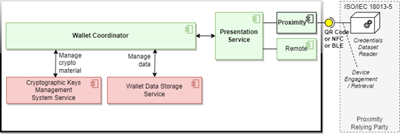
Figure 11: Wallet Proximity Presentation Service
The Proximity Presentation Service implements the proximity attestations presentation as described by ISO/IEC 18013-5. This standard elaborates the mDL use case, but the approach is extensible to any other type of attestations. The data elements used for the mDL in ISO/IEC 18013-5 are qualified using a namespace and hence any other credential can be supported as far as it is defined in a different namespace. PID namespace, schema and model must be defined for them to be transferred using ISO/IEC 18013-5.
The Proximity Interface is a short-range link (QR Code, NFC, BLE) between the Wallet and the RP's attestations reader and is based on the device data retrieval approach. Given this approach, security must be assured via the mandatory security mechanisms specified in the standard session encryption, issuer data authentication, optionally reader authentication and credential authentication.
This service implements the specifics required for proximity flows and hence allows the rest of the components to work in a more generic way, focusing only on the request and the response.
Remote Presentation Service
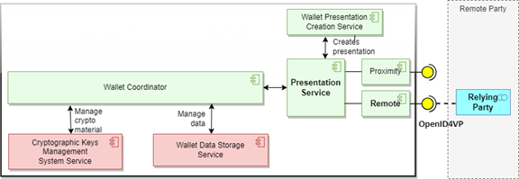
Figure 12: Wallet Remote Presentation Service
The Remote Presentation Service implements the remote presentation use case triggered by the credential reader as described by the OpenID4VP. The exchanges are over the internet. This service implements the specifics required for remote flows and hence allows the rest of the components to work in a more generic way, focusing only on the request and the response.
Please note that using the OAuth 2.0 terminology, for this context, the Wallet is considered an OAuth 2.0 Authorization Server, with protected resources the Wallet holder's attestations. The third party with which the Wallet connects becomes the OAuth 2.0 Client. Hence, the OAuth 2.0 capabilities for Attestations Presentation, transferring Verifiable Presentations and the issuance of Access Tokens for accessing APIs are enabled.
For the typical use case, after the connection with the Relying Party (RP) is established, the RP requests verifiable attestations from the Wallet Holder (Presentation Request). The RP request to the Wallet is an OAuth 2.0 Authorization Request [RFC-6749] enriched with the new parameters defined by the OpenID4VP specification.
For integrity, source authentication, and confidentiality, the RP request parameters can be wrapped in a JSON Web Token (JWT), signed with JSON Web Signature (JWS) and encrypted with JSON Web Encryption (JWE) [RFC-9101: JWT-Secured Authorization Request].
The Remote Presentation Service on the device notifies the Holder for the requested attestations and upon Holder's authorization (via the UI), the selected attributes to be disclosed are packaged as a Verifiable Presentation (VP) Token (vp_token) and sent to the RP.
The RP verifies the VP token and once satisfied (meets RP security requirements), considers the Wallet Holder as identified/authenticated and a Bearer Access Token is returned to the Holder. The Holder can then access those protected resources/services under the RP authority granted by the access token.
Cryptographic Management and Data Storage Services
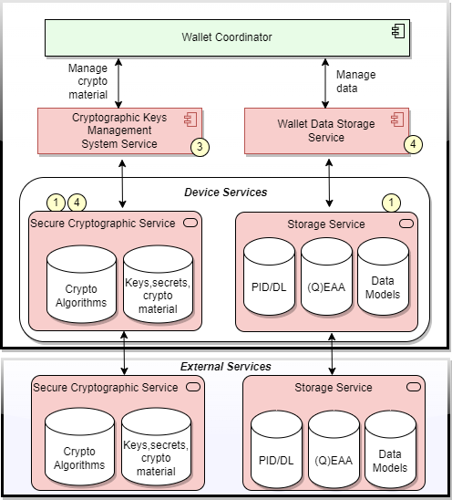
Figure 13: Cryptographic Management and Storage Services
User authentication data, attestations (PID, DL, (Q)EAA) and their metadata will be stored within the Wallet Data Storage as presented in Figure 13. Cryptographic keys and schemes will be stored under the secure area managed by the Secure Cryptographic Service. Temporal state (e.g., last user authentication event, state of processes) will be stored within the Wallet Data Storage.
The Cryptographic Keys Management Service provides data storage and retrieval services for key material. The foreseen data include:
- Cryptographic keys and schemes (crypto algorithms and material).
The Data Storage Service provides data storage and retrieval services for attestations and schemas. The foreseen data include:
- Attestations (PID, mDL, (Q)EAA) and public keys for validating issued attestations.
- Credential data models and the signature scheme used.
Both services, based on their configuration, can delegate their responsibilities to external services as shown in Figure 13. In all cases the Wallet must always authenticate the user before accessing the cryptographic area.
The required Public Keys will be retrieved from trusted lists.
For the explanation of the Wallet components qualifiers used in Figure 13, see Figure 2.
A default Cryptographic Key Managements System Service API (named as Secure Channel Interface (SCI) in the Figure 1), is provided by the Wallet Coordinator. Wallet implementors can inject into the Wallet Coordinator one or more custom implementation for the Cryptographic Key Managements System Service API.
By default, the Wallet Coordinator provides a built-in implementation of the Cryptographic Key Managements System Service API, that utilizes secure platforms such as the Android Keystore. This default implementation ensures secure key generation and storage, leveraging hardware-backed security features when available.
However, recognizing the diverse security requirements of different implementations, the Wallet architecture allows for extensibility and customization. Wallet implementors can inject one or more custom Cryptographic Key Managements System Service API implementations into the Wallet Coordinator. These custom implementations may use specialized security frameworks or adhere to specific policies for cryptographic key management.
Custom implementations allow Wallet Providers to adapt the Cryptographic Key Management System Service API to meet unique regulatory or security needs. For example, they can align with country-specific cryptographic standards or policies for storing and managing keys on device, in eSIM, to external devices and to remote cloud key management storages.
Multiple SecureArea implementations can coexist within the Wallet, enabling flexibility in managing different security contexts per credential/document. This flexibility enhances overall security and trustworthiness.
By allowing multiple SecureArea implementations, stakeholders or Member States can design their cryptographic processes to mitigate risks specific to their environment. For example, they can implement additional controls for highly sensitive data or advanced attack detection mechanisms.
Customization also reduces reliance on third-party solutions or default implementations that may not fully meet specific stakeholders' or Member States' needs.
The extensibility and customization of the Cryptographic Key Management System Service API provides flexibility and ensures the Wallet can evolve alongside emerging security trends, regulatory requirements, and technological advancements, making it versatile and future-proof.
Signature/Seal Provider
Trust Provider Signer is a remote signing service provider and client. It includes the several signature service features. The key feature is that it is possible to sign documents as an authenticated user. Authentication in this case refers to authentication using OpenId4VP therefore enabling EUDI Wallet PID based access.
Additional features include certificates creation management.
Furthermore, a Wallet initiated signing process is supported by the EUDI Wallet for remote signing. The Wallet initiated signing process consists of all the modular and re-useable parts.
Server initiated signing integrated will be also enabled in the EUDI ecosystem by pushing/requesting signing authorization from the EUDI Wallet.
Relying Party Registration Service
As per the European Digital Identity Wallet Architecture and Reference Framework Trust Model,
- Relying Parties are registered by a Relying Party Registrar in their Member State.
- As a result of registration, a Relying Party receives an access certificate from a Relying Party Access CA.
- The RP access certificate is used by the Wallet Instance to authenticate the Relying Party Instance.
- Relying Party authentication is a process whereby a Relying Party proves its identity to a Wallet Instance, in the context of a transaction in which the Relying Party requests the Wallet Instance to release some attributes.
- Relying Party authentication is included in the protocol used (both in ISO/IEC 18013-5 and OpenID4VP) by a Wallet Instance and a Relying Party Instance to communicate.
To facilitate the registration of Relying Parties into the EUDI Wallet reference implementation eco-system a registration service is setup to allow Relying Parties to register their verification system into the EUDI Wallet reference implementation Trust eco-system.
EUDI Core Verifier SDK
Data Models
The EUDI Verifier Core library enables the development of mobile verifier applications compliant with the ISO 18013-5 standard for mobile driving licence (mDL) and mobile identity (mDoc) verification. It provides the foundational capabilities required to manage secure device engagement, data exchange, and document validation between a verifier and a holder. Acting as a coordination layer, it ensures that document authenticity, integrity, and status are reliably confirmed through standardized communication and validation processes. It offers configurable mechanisms for managing transfer sessions, handling verification events, and integrating with existing logging and monitoring frameworks, thereby facilitating interoperability and conformance with the broader EUDI Wallet ecosystem. This section describes the system's data structures, storage, and management.
The data to be managed by the wallet include:
- Cryptographic keys and schemes (crypto algorithms and material).
- Attestations (PID, mDL, (Q)EAA).
- Attestations data models and attestations metadata (attestation signature scheme, type, issuer, bitemporality, public-key/trusted-authority).
- Trusted Lists.
- W3C credentials context schemas.
- Privacy dashboard usage / audit records.
Based on ARF v1.4 the data models that will be used by the EUDI Wallet for Verifiable Attestations are:
- Data Models aligned to ISO/IEC 18013-5:2021 attestations.
- Other data models include the ARF Data Models aligned to the Verifiable Credentials Data Model attestations (see last W3C Candidate Recommendation Draft 05 October 2024).
Based on ARF v1.4, the attestations formats that will be used by the EUDI Wallet are:
- attestations in JWT and SD-JWT formats (based on JSON format)
- attestations in CBOR format (based on JSON-like binary format)
ARF v1.4 already specifies the requirements for Issuing PID and (Q)EAA.
The data will be managed by the Cryptographic Management and Data Storage Services component.
The data models that will be used by the EUDI Wallet for Verifiable Attestations are:
- W3C Verifiable Credentials data model.
- ISO/IEC 18013-5 compliant data model.
The work on designing/creating data models is underway and will be included in a future version of this document. Alternatively, and at the very least, a link to the different data models is foreseen. Specific data models relevant to Membership card, Travel licenses, Temporary passport will be included.
For information on the PID data model see PID Rule Book. The mDL specifications follow the mDL Rule Book.
Process Flow
This section presents the key processes, workflows, or algorithms within the system, using flowcharts, sequence diagrams, or state-transition diagrams. This section also explains the rationale behind these processes and any relevant constraints or optimizations.
ARF 1.4 includes Annex 4 for service blueprints that describe the flows for a number of processes. The list is included below to ease readership:
- Annex 4.01 - Blueprint Initialization and activation
- Annex 4.02 - Blueprint Online identification and authentication
- Annex 4.03 - Blueprint Issuing mDL
- Annex 4.04 - Blueprint Presenting mDL (Proximity-Supervised)
- Annex 4.05 - Blueprint Presenting mDL (Proximity-Unsupervised)
- Annex 4.06 - Blueprint Remote QES - Creating a signature for authentication / authorisation
- Annex 4.07 - Blueprint Remote QES - Enrolment
- Annex 4.08 - Blueprint Remote QES - Creating a signature channeled by EUDI Wallet
- Annex 4.09 - Blueprint Remote QES - Creating a signature channeled by Relying Party
- Annex 4.10 - Blueprint QES - View history of signatures
- Annex 4.11 - Blueprint Local QES - Enrolment
- Annex 4.12 - Blueprint Local QES - Creating a signature.
Additionally, the overview for the core flows is included in the following section.
Attestations Issuance
The descriptions in the subsections below assume that the user has downloaded and installed a certified EUDI Wallet mobile application, and that the application is functional.
PID Issuance
The MS PID Provider identifies and authenticates the user of the EUDI Wallet at LoA High and verifies the EUDI Wallet status and certification. The MS PID Provider may present the PID data to the user before issuance and ask for user's confirmation. The MS PID Provider generates and issues the PID to the EUDI Wallet. Issuance to the device can be done via a QR Code or NFC or HTTP on top of any secure transport layer.
PID will be issued in ISO 18013-5 and W3C VC formats and will include the attributes specified by ARF (see PID Attributes for Natural Persons).
The EUDI Wallet's Issuance Service (see 6.4) will receive, verify, and store the PID and the PID metadata.
For information on the PID data model see: PID Rule Book under ARF 1.4.
mDL Issuance
The mDL issuance will follow the same approach as PID.
(Q)EAA
An RDF graph with two nodes (Subject and Object) and a Predicate An RDF graph with two nodes (Subject and Object) and a Predicate An RDF graph with two nodes (Subject and Object) and a Predicate An RDF graph with two nodes (Subject and Object) and a Predicate An RDF graph with two nodes (Subject and Object) and a PredicateBased on the ARF:
- Qualified EAA are provided by QTSPs.
- (Q)EAA MUST be issued in accordance with one of the data model specifications: ISO/IEC 18013-5:2021 and/or W3C Verifiable Credentials Data Model 1.1 and use one of the following signature and encryption formats as detailed in: JOSE RFCs, COSE RFCs accordingly to data model used for the attestation.
- (Q)EAA SHOULD use signature and encryption algorithms in accordance with SOG-IS ACM.
- (Q)EAA SHOULD be issued accordingly to OpenID4VCI protocol.
- Qualified EAA are provided by QTSPs. The general Trust Framework for QTSPs applies also to QEAA, but specific rules for this Trust Service need to be defined as well.
- EAA can be provided by any Trust Service Provider. While they are supervised under eIDAS, it can be assumed that other legal or contractual frameworks than eIDAS mostly govern the rules for provision, use and recognition of EAA.
Proximity and Remote Flows
Proximity flows
Proximity flows are related to scenarios where the EUDI Wallet User is physically close to a Relying Party and the attestation exchange and disclosure (PID and/or QEAA) happens using proximity protocols (NFC, Bluetooth, QR-Code, etc.), without the User having internet connectivity. The two proximity flows differ in one important way.
- Supervised flow: In the supervised flow, the EUDI Wallet presents verifiable attributes to, or under supervision of, a human acting as a Relying Party (who may operate a device of their own).
- Unsupervised flow: In the unsupervised flow, the EUDI Wallet presents verifiable attributes to a machine without human supervision.
For more information on the proximity flows see ARF 1.4:
- Annex 4.04: presenting mDL (proximity-supervised) The service blueprint about presenting mDL (proximity-supervised) is described in file Annex 4.04 - EUDI Wallet - presenting mDL (proximity-supervised.pdf).
- Annex 4.05: presenting mDL (proximity-unsupervised) The service blueprint about presenting mDL (proximity-unsupervised) is described in the file Annex 4.05 - EUDI Wallet - presenting mDL (proximity-unsupervised.pdf).
Remote flows
Remote flows are related to scenarios where the data exchanges happen over the Internet.
- Remote cross-device flow: In the remote cross-device flow, the EUDI Wallet User consumes information from the service on another device than the EUDI Wallet device, which is only used to secure the session (for instance using the EUDI Wallet to scan a QR code on a login page to access a bank account on their web browser).
- Remote same-device flow: The remote same-device flow, the EUDI Wallet User uses the EUDI Wallet device both for securing the session and to consume the information from the remote service (typically using the same device browser).
For more information on the remote flows see ARF 1.4:
- Annex 4.02: Online Identification & Authentication.
Management of Key Material
Once the device is unlocked and the holder is authenticated, the wallet must be able to support all traditional transactions performed by the holder (once the relying party implements the relevant capabilities).
Like smart cards, a holder may have more than one key pairs, with each Secret Key (SK) replacing a smart card. Secret Keys must be stored within the device secure keystore for cryptographic keys. Usage of these keys must be linked to a holder and to holder's authentication LoA. The required LoA for each key must be configurable. Signed Public Keys (e.g., signed by a bank), linking the key with the holder, will be available at Trusted Stores and potentially cashed by the Relying Party.
Modern mobile devices provide secure keystores for cryptographic keys. The key material is non-exportable, and the device can be configured to require strong authentication for using the keys.
Since the available configurations on the device will be different e.g. smartphone without certified (EAL4+) Secure Storage the wallet issuer and the approving authorities may classify the devices and the wallet solutions by their Level of Trust (LoT), evaluate the risks and restrict accordingly the potential transactions based on their impact. Further, it is expected that a device will need to be certified against EAL4+ with the AVA.VAN5 profile and the overall wallet solution (including the specific device configuration) will need to be certified against LoA High requirements.
Any imposed restrictions will be stored as a secure element at issuance time and act as a precondition for each transaction.
Trust Management
Trust management ensures the security and integrity of issued attestations by validating cryptographic elements according to ISO/IEC 18013-5. This includes certificate path validation of the MSO header's certificate, digital signature verification of the issuer authentication structure, digest value validation, consistency checks for document type, and validation of the credential's validity information. These processes help maintain authenticity, prevent tampering, and ensure compliance with established standards.
Integration and Communication
This section describes how the system's components interact and communicate with one another, including any protocols, data formats, or messaging patterns used. This section covered external integrations and third-party services the system relies on.
The hexagons representation of the parties and the links in the figure indicate that potentially multiple different APIs will be required by each Party.
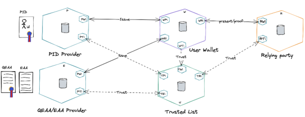
Figure 14: EUDIW Environment and Interaction Interfaces. Index: W: Wallet, P: PID Provider, E: (Q)EAA Provider, T: Trusted List, R: Relying Party
User Wallet (W)
The Wallet provides interfaces for communicating with Attestation Providers, Trusted Lists and Relying Parties.
Attestation Providers (P)
The Attestation Providers issue conformant verifiable attestations. Examples are PID, mDL, QEAA (e.g., University Degree) and EAA.
Attestation Providers can be government entities, identity service providers, digital platforms, mobile networks, wallet providers, financial institutions, educational institutions such as universities or any entity a user trusts to set-up identity claims.
Attestations can be self-issued (see SIOP) using a certificate that is trusted by the relevant RP for those use cases that this makes sense.
Trusted Lists (T)
Trusted list services store and sign public key material (public key certificates) and make them available to verifiers.
Trust List Provider (TLP)
A Trusted List Provider is a body responsible for maintaining, managing, and publishing a Trusted List. Within the EUDI Wallet ecosystem, Trusted Lists exist for the following entities:
- Wallet Providers,
- PID Providers,
- QEAA Providers,
- PuB-EAA Providers,
- Access Certificate Authorities (for RP),
- Qualified Electronic Signature Remote Creation (QESRC) Providers.
Trusted Lists contain the trust anchors of the relevant entities. A trust anchor is a combination of a public key and the identifier of the associated entity and may be used to verify signatures created by that entity.
An entity's status as a trusted entity can be verified by checking whether they are present on the relevant Trusted List.
Trusted Lists (TL) and EU List of Trusted Lists (EU LoTL)
The TL includes information related to the trust service providers (within the EUDI Wallet ecosystem: Wallet Providers, PID Providers, QEAA Providers, PuB-EAA Providers, Access Certificate Authorities (for RP), and Qualified Electronic Signature Remote Creation (QESRC) Providers) which are supervised by the competent Member State, together with the trust anchor and other information related to the trust services provided by them.
- A TL is created, electronically signed, published and managed by a Member State.
The EU LOTL combines all national Trusted Lists into a single, easily accessible list, simplifying the verification of digital identities across Member States.
- The EU LOTL is created, electronically signed, published and managed by the EC.
The source of trust of the TLs is the EU List of the Trusted Lists (LOTL). And the source of trust for the LOTL is the Official Journal of the European Union (OJEU)
- LOTL signing certificates and the location of the LOTL XML file are contained in the LOTL itself, as detailed in the OJEU publication.
Reference Implementation Trusted List Provider
The Reference Implementation Trusted List Provider has the following features:
- Users:
- TSL Operator - Member States
- LoTL Operator - EC
- Functionalities for TSL Operators:
- Manage TSPs and their trust services
- Create and sign TLs
- Functionalities for LoTL Operators:
- Create and sign LoTL (combining the TL created by the Member States)
Relying Parties (R)
The Relying Parties are those parties relying on user identification or on proving other qualifications. They use trusted lists for verifying the presented attestations.
The Attestation verification may be outsourced by the Relying Party to a Verifier (V). Attestation verification includes checking that the attestation exists and has not been revoked or expired at the verification time.
Typical interactions between parties
The user stores and manages Attestations using a User Wallet (W).
Holder => Relying Party: The Holder asks the Relying Party for services and presents the selected/requested attestations.
Relying Party => Verifier: The Relying Party asks/uses a Verifier to verify the provided attestations (over the internet could be via an HTTP redirect). The Verifier can be part of the Relying Party or an outsourced entity.
Verifier => Relying Party: The Verifier informs the Relying Party on the outcome (attestations valid or invalid/missing/expired/withdrawn). For the verification the Verifier may need to contact trusted services.
Relying Party => Holder: The Relying Party based on the Verifier's response decides to provide the service or not and informs the Holder.
In the case the Holder does not hold the attestations requested by the Relying Party or are not valid or have expired or withdrawn, then the Holder must contact the appropriate Credential Issuer for the missing/invalid attestations.
Holder => Attestations Issuer: The Holder requests attestations and provides evidence and may succeed or not.
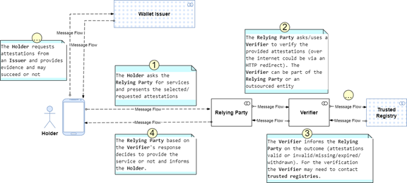
Figure 15: Typical interactions between parties
Testing and Integration Environments
The Testing and Integration Environments provide a structured setup for validating the EUDIW system components. These environments facilitate secure issuance, verification, registration, and signing of Verifiable Credentials (VCs) using OpenID protocols.
Issuer - OpenID4VCI
The Issuer component is responsible for issuing Verifiable Credentials (VCs) using OpenID4VCI. The following links provide access to different issuer services:
Verifier - OpenID4VP
The Verifier component enables verification of issued credentials using OpenID4VP. The following links provide access to different verifier services:
Relying Party Registration
Relying parties use these links to register and integrate their services with the EUDIW system:
Signing
The signing component ensures the authenticity and integrity of issued credentials. The following signing services are available:
- Trust Provider Signer
- Wallet-Centric Signer
- Relying-Party-centric -- Relying Party test site
Demo - Use Cases
These demo environments showcase various use cases and provide a testing ground for real-world implementations:
Technical Specifications Maturity
EUDIW MVP design and implementation depends on a set of core specifications, as well as their dependencies, to be in the published status or at least drafts at a mature stage. It is assumed that by Jan 2024 all core specifications referenced below that are currently in the draft status will reach the published status. The status of the core standards at the time of writing (Feb 2025) is the following:
- ISO/IEC 18013-5 -- Published (Edition 1, 2021)
- ISO/IEC 23220-4 -- Finalizing Draft, but includes the main parts of interest
- ISO/IEC 18013-7 -- Published (Edition 1, 2024)
- W3C Verifiable Credentials Data Model v1.1 -- Published (W3C Verifiable Credentials Data Model v2.0 -- Candidate Recommendation Draft but includes the main parts)
- Selective Disclosure JWT (SD-JWT-VC) Draft
- Presentation Exchange v2.0.0 - Published
- OpenID4VP -- Draft 24 (Published 27/01/2025)
- SIOPv2
- OID4VCI -- Draft 15 (Published 19/12/2024)
- OpenID4VC High Assurance Interoperability Profile - Draft 01 (Published 07/12/2024)
In the coming months the development focus will be on the OID4VP third implementer's draft (Draft 23) and the OID4VCI second implementer's draft (Draft 15).
Future releases of this document may cover more aspects such as:
- current hardware limitations for key management
- adjustments required for low-end mobile devices.
Missing documents: Gaps for which no standard or specification can currently be referenced
| Common formats for Relying Party registry information |
|---|
| Common Access CA Certificate Policy |
| Common set of Relying Party information to be registered |
| Specification of Wallet Trust Evidence contents |
| Specification of Proof of Association implementation |
| Specification of EUDI Trust Mark |
| Specification of common interface for lodging complaints to DPAs |
| Specification of common interface for data deletion requests to Relying Parties |
| Specification of interfaces and formats for the catalogue of Attestation Rulebooks and attributes |
| Specification of Wallet-to-Wallet interactions |
| Specification of systems enabling the notification and subsequent publication of Provider information |
| Specification of backup and restore functionality |
| Specification of Wallet Unit Attestation |
| Specification of interfaces related to Authentic Sources |
| Specification of mechanism allowing embedded disclosure policies |
| ARF - Annex 3.1 - PID Rulebook |
| ARF - Annex 3.3 - Pseudonym Rulebook |
Other documents to be finished or created
| (Natural person) PID Rulebook with SD-JWT VC details |
|---|
| Legal-person PID Rulebook |
| Pseudonym Rulebook |
| Architecture Reference Framework |
Annex 1 - References to External Resources
This section lists the external resources, such as standards, specifications, or research papers, that have informed the system's design.
CBOR/COSE Specifications
This section provides a short overview of the cryptography related specifications that are based on the Concise Binary Object Representation (CBOR) data format and are used in the Verifiable Attestations domain.
Concise Binary Object Representation (CBOR) - RFC 8949
The Concise Binary Object Representation (CBOR) is a data format designed for small code size and small message size. CBOR is the binary equivalent of the JSON textual format. CBOR, like JSON is simple and generic. Existing formats in this category are ASN.1's BER and DER and many others (see references in RFC 8949). The reader will benefit from reading the objectives of CBOR as those are explained in RFC 8949 (that is, an optimal but balanced design).
For simplification, applications that need to transfer binary data, could use CBOR instead of JSON. In such cases, using JSON would require base64 encoding and decoding of the binary data. CBOR, instead of JSON, could also be used in cases where the message size matters since CBOR is more compact.
ISO/IEC 18013-5 uses CBOR data structures encoded according to RFC 8949. JSON structures are encoded according to RFC 8259.
References: https://cbor.io/, See also: rfc8943-CBOR-dates.
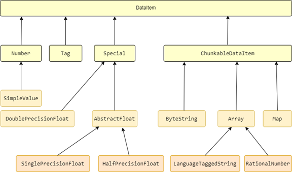
Figure 16: CBOR Data Items
Concise Data Definition Language (CDDL) - RFC 8610
CDDL specifies a notational convention for defining CBOR data structures.
The goals of the CBOR notational convention as stated explicitly in RFC-8610 are:
- Provide an unambiguous description of the overall structure of a CBOR data item.
- Be flexible in expressing the multiple ways in which data can be represented in the CBOR data format.
- Be able to express common CBOR data types and structures.
- Provide a single format that is both readable and editable for humans and processable by a machine.
- Enable automatic checking of CBOR data items for data format compliance.
- Enable extraction of specific elements from CBOR data for further processing.
The CDDL (Concise Data Definition Language) as specified in RFC 8610 is used by ISO/IEC 18013-5 to specify the CBOR and JSON-encoded data structures.
CBOR Object Signing and Encryption (COSE) - RFC 9052
CBOR is a data format designed for small code size and small message size. There is a need for the ability to have basic security services defined for this data format.
RFC 9052 defines the CBOR Object Signing and Encryption (COSE) protocol and describes how to create and process signatures, message authentication codes, and encryption using CBOR for serialization. RFC 9052 additionally describes how to represent cryptographic keys using CBOR.
COSE usage examples by ISO/IEC 18013-5:
- Device and reader ephemeral keys
- Digital signatures generated over the mobile security object (MSO).
CBOR/COSE Implementations
A lean library for coding/decoding CBOR data is:
The library c-rack/cbor-java above is a dependency of
This library provides more extended support for the ISO/IEC 18013-5 implementation.
As a principle, a layered approach, followed by the previous high-quality libraries, provides more flexibility. Other libraries for CBOR data coding/decoding are:
A robust Java and Android open-source library for CBOR Object Signing and Encryption is https://github.com/android/cose-lib. See also: https://github.com/cose-wg/COSE-JAVA
JSON/JOSE Specifications
This section provides a short overview of the cryptography related specifications that are based on the JSON data format and are used in the Verifiable Attestations domain.
JSON Web Token (JWT) - RFC 7519 & RFC 8725
JSON Web Token (JWT) is a compact, URL-safe means of representing claims to be transferred between two parties. The claims in a JWT are encoded as a JSON object that is used as the payload of a JSON Web Signature (JWS) structure or as the plaintext of a JSON Web Encryption (JWE) structure, enabling the claims to be digitally signed or integrity protected with a Message Authentication Code (MAC) and/or encrypted.
For particular uses cases, JWT can include a predefined set of claims tailored for these use cases. An example is the JWT Secured Authorization Response Mode (JARM) defined by https://openid.net/specs/oauth-v2-jarm.html which includes the authorization code and the optional client state parameter. JARM is used for example by OID4VP to sign, or to sign and encrypt the Authorization Response.
JSON Web Key (JWK) - RFC 7517
A JSON Web Key (JWK) is a JavaScript Object Notation (JSON) data structure that represents a cryptographic key. This specification also defines a JWK Set JSON data structure that represents a set of JWKs. The cryptographic algorithms and identifiers to be used with this specification are described in the separate JSON Web Algorithms (JWA) specification and IANA registries established by that specification.
The JSON web key (JWK) is used by the ISO/IEC 18013-5 reader for validating the Open ID Token.
Also, RFC-7797 to be considered.
JSON Web Signature (JWS) - RFC 7515
JSON Web Signature (JWS) represents content secured with digital signatures or Message Authentication Codes (MACs) using JSON-based data structures. Cryptographic algorithms and identifiers for use with this specification are described in the separate JSON Web Algorithms (JWA) specification and an IANA registry defined by that specification. Related encryption capabilities are described in the separate JSON Web Encryption (JWE) specification.
ISO/IEC 18013-5 uses the JSON Web Signature (JWS) spec as described in sections 9.2.2, 9.3.2, and B.1.5 JWS signer certificate. That is for the link between the issuing authority infrastructure and the mobile doc reader.
JSON Web Encryption (JWE) - RFC 7516
JSON Web Encryption (JWE) represents encrypted content using JSON-based data structures. Cryptographic algorithms and identifiers for use with this specification are described in the separate JSON Web Algorithms (JWA) specification and IANA registries defined by that specification. Related digital signature and Message Authentication Code (MAC) capabilities are described in the separate JSON Web Signature (JWS) specification (see RFC 7518 above).
ISO/IEC 18013-5 uses JSON Web Encryption for session encryption.
JSON Web Algorithms (JWA) - RFC 7518
The JSON Web Algorithms specification registers cryptographic algorithms and identifiers to be used with the JSON Web Signature (JWS), JSON Web Encryption (JWE), and JSON Web Key (JWK) specifications. The specification focuses on the following areas:
- Cryptographic Algorithms for Digital Signatures and MACs
- Cryptographic Algorithms for Key Management
- Cryptographic Algorithms for Content Encryption
- Cryptographic Algorithms for Keys
- IANA Considerations
- Security Considerations
- Internationalization Considerations
ISO/IEC 18013-5 requires that one of the following JSON Web Algorithms (JWA) shall be used for the link between the issuer and the reader:
a. ES256: ECDSA using Curve P-256 and SHA-256,
b. ES384: ECDSA using Curve P-384 and SHA-384,
c. ES512: ECDSA using Curve P-521 and SHA-512.
JSON/JOSE Implementations
A robust Java and Android open-source library for JSON Object Signing and Encryption is Nimbus JOSE + JWT. See:
OpenID for Verifiable Credentials (OpenID4VC)
This section provides a short overview of the OpenID specifications that are related to, or have been designed for, the Verifiable Attestations domain. OpenID does not introduce a new data model for verifiable attestations as ISO and W3C do. The acronym 'OpenID4VC' is a reference to the relevant specification's family: OID4VCI, OID4VP and SIOPv2.
An excellent overview of the OpenID4VC specifications, and in general of the VC domain, is provided by the following whitepaper: openid-for-verifiable-credentials-whitepaper
Terms that have already been defined in OpenID Connect Core are used as-is by OpenID4VC.
One of the tasks of the work being conducted by the OpenID Foundation was the alignment of ISO-compliant mobile driving licenses with the W3C verifiable attestations data model, which has been one area of particular interest for the ecosystem.
The target abstract use case is: The End-User directly receives attestations from an Issuer and directly presents them to the Verifier using interoperable verifiable attestations expressed in any appropriate data model (e.g., ISO/IEC 18013-5 or W3C Data Model).
OpenID for Verifiable Presentations (OID4VP)
The OID4VP specification defines a mechanism that enables a Verifier to request from a Holder the presentation of selected attributes from various Attestations and to receive those attributes as a Verifiable Presentation (VP).
The OID4VP specification defines a VP to be a Holder-signed (not an Issuer-signed) credential whose authenticity can be cryptographically verified to provide Cryptographic Holder Binding, and can be of any data format, including those defined by W3C and ISO-18013-5.
- Request: The required attributes and their qualifying metadata are defined by a Presentation Definition (a JSON object) that is part of the request. The request can be encoded as a JWT-Secured Authorization Request (JAR).
- Response: OID4VP introduces the VP Token as a container to enable End-Users to present Verifiable Presentations to Verifiers using the Wallet. A VP Token contains one or more Verifiable Presentations in the same or different Credential formats. Attestations of multiple formats can be presented in the same transaction. The response containing the VP Token can be signed and/or encrypted. To sign, or sign and encrypt the response, implementations MAY use JWT Secured Authorization Response Mode for OAuth 2.0 (JARM).
The OID4VP specification supports:
- Same Device Flow: A flow where the End-User presents a Credential to a Verifier interacting with the End-User on the same device the Wallet resides on.
- Cross Device Flow: A flow where the End-User presents a Credential to a Verifier interacting with the End-User on a different device (e.g., a PC) as the device the Wallet resides on (e.g., on mobile).
See:
OpenID for Verifiable Credential Issuance (OID4VCI)
The OID4VCI is a specification for issuing verifiable attestations and is based on OAuth 2.0. To support the VC issuance, the specification defines some new grant types and extensions mechanisms. The specification is practically data format agnostic and supports, via the credential format profiles extension, the VC data models defined by W3C and ISO-18013-5.
A VC Issuer is protected by an OAuth 2.0 Authorization Server whereas the Wallet acts as an OAuth 2.0 Client. Wallet holders learn about a VC Issuer via the published Issuer's metadata.
The Wallet sends a Credential Request to the new Credential's API. During the authorization process or the issuance flow, the issuer may request the presentation of existing attestations.
Figure 17: OID4VCI specification for authorization code flow
See:
Self-Issued OpenID Provider
The SIOP v2 specification introduces the concept of a Self-Issued OpenID Provider (OP), an OP controlled by the End-User.
A Self-Issued OP does not itself assert identity information about the End-user. The trust model is decentralized but still the RPs Trust is based on trusted issuers of the End-User key material used for claims signing. RP needs to establish trust to the certificate authorities responsible for issuing end users proof of core identity. For SIOP v2 end-users issue self-signed claims to prove validity of their claims.
Trusted issuers are defined by the Relying Parties (RP), which resolve issuer public keys based on their URIs and retrieve their public keys dynamically from the Verifiable Data Registry (VDR).
Using Self-Issued OPs, End-Users can authenticate themselves with Self-Issued ID Tokens signed with keys under the End-user's control and present self-attested claims directly to the RPs.
Self-Issued OPs can also present cryptographically verifiable claims issued by third parties trusted by the RPs. This allows End-Users to interact with RPs, without RPs interacting directly with claims issuers.
See: Self-Issued OpenID Provider v2
OpenID4VC Implementations
See proposed libraries for OID4VCI and OID4VP under https://openid.net/openid4vc/.
ISO for Verifiable Credentials
This section provides a short overview of the ISO standards that are related to, or have been designed for, the Verifiable Credentials domain. ISO/IEC 18013-5 introduces a new data model for verifiable attestations.
ISO/IEC-18013-5
ISO/IEC 18013-5 describes the interface and related requirements to specifically facilitate ISO-compliant driving license functionality on a mobile device. However, the transaction and security mechanisms in ISO/IEC 18013-5 have been designed to support other types of mobile documents. ISO/IEC-18013-7 adds functionality by building on top it.
ISO/IEC-23220-4
The ISO/IEC-23220 series, still draft, is about cards and security devices for personal identification. It is focused on building blocks for identity management via mobile devices and hence very relevant to this document. Part 4 concerns protocols and services for operational phase.
ISO Data Model for VC
For ISO 18013-5 the credential's data is organized as individual data elements which can be requested and returned independently from each other. Each data element has an identifier, a specified format, and an indication of whether it is mandatory or optional.
The ISO defines in detail the Driving License (mDL) use case, but the concepts have been designed so that other mobile attestations/documents, e.g., PID, with a separate set of data elements, can also make use of the engagement and retrieval protocols described in the ISO.
The ISO data model is based on elements with unique identifiers within a namespace. The number of elements can vary, and the model is indifferent to the value and data format of each element. As such the data model described by the ISO is generic and can be applied to any kind of document/credential.
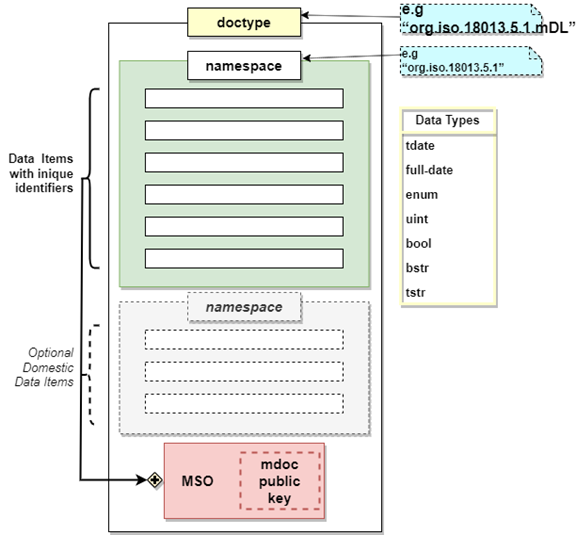
Figure 18: ISO/IEC 18013-5 data model
As per ISO, a mobile doc is organized as shown below:
Doctype (e.g., "org.iso.18013.5.1.mDL") Namespace (e.g., "org.iso.18013.5.1")
- Data Items with unique identifiers (any number)
Domestic namespace (optional)
- Other Domestic Data Items (any number)
Mobile security object (MSO)
The issuer data authentication is implemented by way of a digital signature over the mobile doc data, calculated by the issuing authority using a public-private (asymmetric) key pair.
The issuing authority calculates a message digest for each data element present on the mobile doc and includes all digests in the mobile security object (MSO). The issuing authority infrastructure then digitally signs the MSO using a private key that is kept secret and adds the digital signature to the mobile doc data.
The public key associated with the private key used for the digital signature is provided as part of a certificate. When the mobile doc is presented to a mobile doc reader, the mobile doc reader retrieves this certificate and performs the ISO specified verification procedure.
Namespace Versioning: The number "1" in the namespace used by the mDL use case allows to be incremented in future versions of the standard. Within this namespace, only elements defined by the ISO for the mDL use case may be used. The same approach could be applied to any kind of document/credential. To accommodate domestic data, an issuing authority may define its own domestic namespace.
Encoding of data structures and data elements: The CDDL (Concise Data Definition Language) as specified in RFC 8610 is used to express CBOR and JSON-encoded data structures. CBOR structures are encoded according to RFC 7049. JSON structures are encoded according to RFC 8259. RFC 7049 describes the rules to be followed for CBOR. For more details see ISO/IEC 18013-5 section 8.1 "Encoding of data structures and data elements". See: mobile-document-request-api
Data elements: Each data element is described by the following fields:
- Identifier: e.g., birth_date
- Meaning: e.g., Date of birth
- Definition: e.g., Day, month, and year on which the mDL holder was born. If unknown, approximate date of birth:
- Presence: e.g., M or O
- Encoding format: e.g., tstr, tdate, full-date, enum, uint, bool, bstr (e.g., for portrait or other biometrics)
ISO/IEC 18013-5 Security
ISO/IEC 18013-5 defines a Mobile Security Object (MSO) for the purpose of verifying the integrity and authenticity of mDL data as provided to verifying parties by the Holder's mobile device.
The MSO contains digest values for each data element contained within the mDL, along with the mDL device key and validity information.
At the time of issuance or update, the Issuing Authority (IA) cryptographically signs the entire MSO data structure with the IA private key (the IA public key is distributed as part of the mDL Master Lists). This information set allows any verifier to check the validity of the mDL data passed during the transaction and verify that it has been signed by a trusted issuer though the validation of the IA signature.
In ISO/IEC 18013-5 the portrait is the only data element for verifying that the person presenting the mDL is the mDL holder. Depending on the transaction details, in an unattended transaction (unsupervised flow) this data element may not be able to serve the purpose of confirming that the person presenting the mDL is the mDL holder.
ISO for VC Implementations
An implementation of the ISO/IEC 18013-5 would require a careful reading of the ISO and the referenced RFCs (Request for Changes). A starting point could be existing implementations and deployments like for example the following:
- identity-credential
- IdentityCredentialStore
- digital-identities-mdl (a project specific to mDL started under NIST in parallel to EUDIW)
W3C for Verifiable Credentials
This section provides a short overview of the W3C standards that are related to, or have been designed for, the Verifiable Credentials domain. W3C uses the JSON-LD data model, a JSON representation of the W3C RDF framework.
W3C for VC Data Model
Figure 20 below provides the context of the W3C JSON-LD specification that defines the W3C Linked Data Model.

Figure 19: Main specs in the JSON-LD context and W3C VC
JSON-LD is a JSON representation of the W3C RDF framework and is used along with the JWT and JWS RFCs for the specification and implementation of the W3C Verifiable Credentials Data Model. JSON-LD is a concrete JSON based syntax of the RDF (Resource Definition Framework) framework (see Figure below).
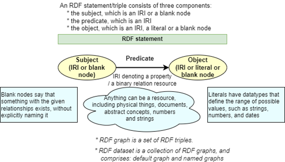
Figure 20: An RDF graph with two nodes (Subject and Object) and a Predicate
JSON-LD uses the following keys for specifying a node:
- @id: Used to uniquely identify a node.
- @type: Used to set the type of a node or the datatype of a typed value.
The context is defined using "@context" (as a resource or inline).
Example can be generated using the online-playground
Selective Disclosure of Verifiable Credentials
The presentation of a selected subset of attributes from a particular credential or the aggregation of attributes from several verifiable attestations are typical use cases of verifiable presentations.
The selective disclosure capability enables a holder to create a verifiable presentation by selecting a subset of the attributes of a verifiable credential or by merging attributes from multiple verifiable attestations. For example, ISO/IEC 18013-5 enables this capability for the mDL by managing each attribute as independent.
This section describes schemes providing this capability in a more generic way than the approach followed by ISO/IEC 18013-5 but still requiring a specific issuance approach and signature-scheme.
Selective Disclosure for JWTs (SD-JWT)
Selective Disclosure enables the holder to have a credential with many claims, and only release the claims necessary to the interaction. Selective Disclosure enables minimal data disclosure.
See the latest SD-JWT draft and the following implementations:
BBS Signature Scheme
BBS is a digital signature scheme that supports signing multiple messages whilst producing a single output digital signature. Through this capability, the possessor of a signature can generate proofs that selectively disclose subsets of the originally signed set of messages, whilst preserving the verifiable authenticity and integrity of the messages. Furthermore, these proofs are said to be zero-knowledge in nature as they do not reveal the underlying signature; instead, what they reveal is a proof of knowledge of the undisclosed signature.
See latest draft: bbs-signature
Camenisch-Lysyanskaya Signature Scheme / Zero Knowledge Proofs
Specifies a scheme that can be used to construct efficient anonymous credential systems as well as group signature and identity escrow schemes. It provides efficient protocols that allow one to prove in zero-knowledge the knowledge of a signature on a committed (or encrypted) message and to obtain a signature on a committed message.
See for example: Signature Schemes and Anonymous Credentials
Protection against Relying Party Collusion
To mitigate the risk of Relying Party collusion, it is possible to put in place policies that will enable the Wallet to generate a new public key for each document to be used for transactions with different Relying Parties and to limit the number of transactions that the key can be used.
Technologies
This section provides a short overview of technologies related to, or have been designed for, the Verifiable Attestations domain.
QR Code
QR Code presentation/reading constitutes an innovative short-message exchange mechanism based on visual encoding and proximity reading by a scanner/reader. The message exchange is limited in size by the QR Code display and the optical reader resolution. The QR code can also be transferred to the device over the Internet and scanned by a proximity QR reader from the device display.
The outstanding capability provided by the QR Code in the VC domain, and utilized by VC related protocols, is its capability of crossing network boundaries. VC requests and responses can be transferred between not connected networks.
Typically, a QR Code contains a signed message (for example the Covid certificate, a ticket, or a URL) delivered by the issuer. This is useful but does not allow verifiable presentations using selective disclosure. Selective disclosure of attributes requires the QR Code generator on the device. Such generators are already available on mobile apps stores. Also, open-source libraries for QR code generation do exist and the EUDIW could base its implementation on these.
NFC Tag
Unlike QR Codes that are passive, NFC Tags are able to react appropriately when activated by a device like a smartphone.
NFC is a method of wireless data transfer that allows smartphones and other devices to exchange data with NFC tags when in close-proximity and have the NFC tag process the data. The NFC technology powers contactless payments via mobile wallets or contactless cards.
An NFC-enabled smartphone uses an NFC controller chip connected to an NFC antenna. The device controller scans periodically its proxy environment for any NFC tags. Upon detection, it's able to exchange data with NFC tags. Actually, the tag is powered by the device via electromagnetic induction between the two antennas.
Annex 2 - Low Level Design Aspects
The low-level design aspects of the EUDI Wallet are described by the Low Level Design document (LDD: eudi-wallet-lld.md) which is maintained under the same git repository with this document (HLD: eudi-wallet-hld.md).
Both documents are maintained under: eudi-doc-reference-implementation-architecture.git.